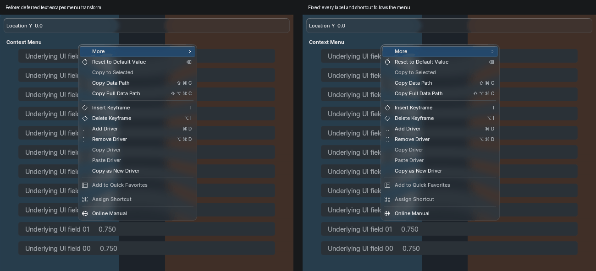
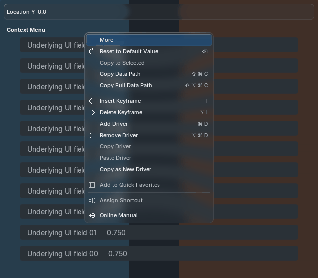

The test explicitly enables Blender's native deferred text batch. The old painter could submit its final labels after the animated menu matrix was popped. The fix submits text under its owning transform for the finite animation window; resting menus keep the existing batching path.

Left: original painter under native batching. Right: fixed painter, same input, dimensions, theme and cached liquid-glass backdrop. This is actual implementation comparison, not generated-reference acceptance.

153 animation frames per Blender version cover root/nested/back navigation, capture modes, shortcut capture and inline fields. Every batched frame equals its unbatched counterpart pixel for pixel on Blender 5.1.2 and 5.2.2 Metal. Disabled options and shortcut hints share the same scoped text path. Rest, settle and disable pixels are unchanged.
No new offscreen, backdrop capture, blur or permanent timer. The fix uses public font APIs; exact-build private batching calls exist only in the test fixture.
Pixel checks, resource counts and timings · Exact official font implementation sources · Wide numeric fields at 15% bounce · New event properties